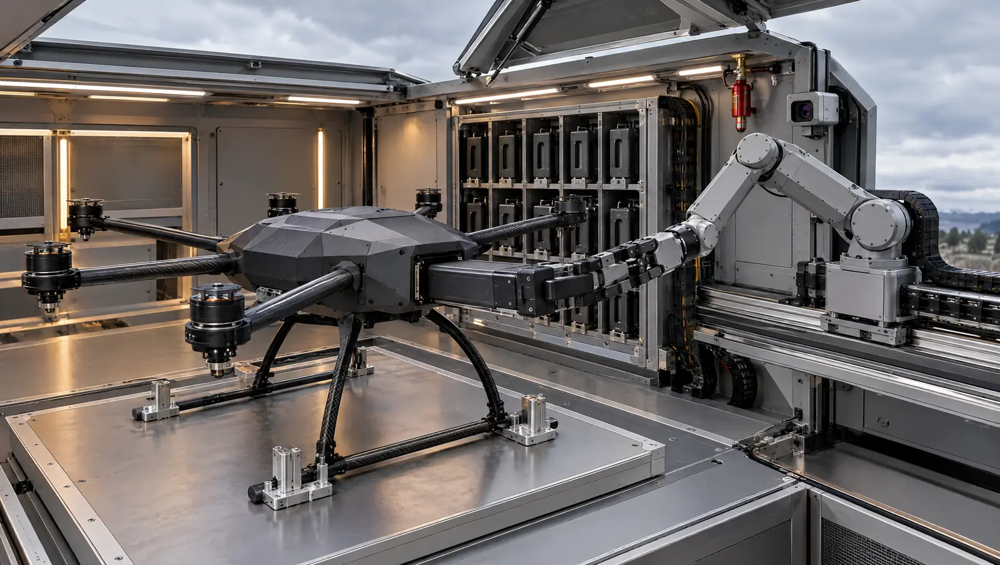

Illustrative Configuration
01 / Product Family
UAV Hangar Platform
Robotic infrastructure for aircraft protection, recovery, charging, payload handling, inspection, data transfer, and mission turnaround.